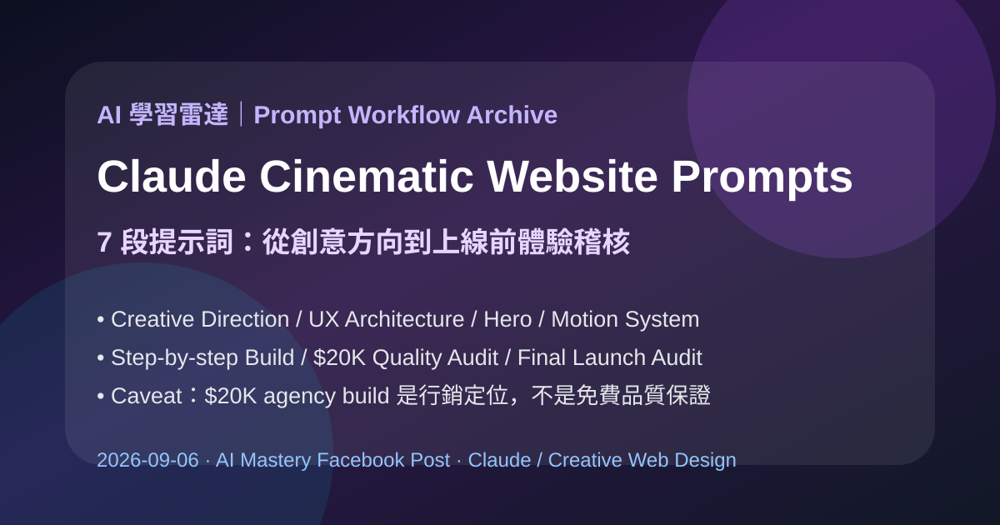

Facebook｜AI Mastery：用 Claude 製作電影感動畫網站的 7 段高端提示詞流程

一句話摘要
這篇貼文的價值不在「Claude 免費取代 20K 美元 agency」這句誇張標語，而在它把高端互動網站的 AI 工作流拆成七個角色與階段：創意方向、UX 體驗架構、hero 設計、動態系統、逐步工程實作、品質升級稽核、上線前總檢。對 AI 學習雷達來說，它可轉成一套可教、可驗收、可加入人工審美與工程 QA 的提示詞框架。
來源脈絡
- Facebook 分享連結：https://www.facebook.com/share/p/1CwQQPHWTT/?mibextid=wwXIfr
- Canonical：https://www.facebook.com/61585600673719/posts/-breaking-claude-can-now-build-cinematic-animated-websites-that-look-like-a-20k-/122145478647186689/
- 作者：AI Mastery
- 發布時間：Facebook 顯示約 2 天前
- 互動：公開畫面顯示約 871 個心情、161 則留言、274 次分享
原貼文主張
> BREAKING: Claude can now build CINEMATIC, ANIMATED websites that look like a $20K agency build — for FREE. 7 powerful prompts to create premium, high-end web experiences.
這句話應拆成兩層理解：
- 可保存的實務價值：七段 prompt 確實是一套高端網站創作與驗收流程。
- 需要標註的行銷語言：「$20K agency build」與「for FREE」不是官方承諾，也不代表只要貼 prompt 就能得到商業級成果。
7 段提示詞框架
### 1. Create the Cinematic Creative Direction
> Act as an award-winning digital creative director. Transform [BRAND/PRODUCT/IDEA] into a cinematic, luxury website concept. Define the visual narrative, art direction, creative concept, typography, color palette, composition, materials, lighting, atmosphere, depth, motion language, and emotional experience. Avoid generic templates, predictable SaaS aesthetics, and overused design patterns. Make every element feel original, intentional, immersive, and premium—like a world-class $20K studio website.
### 2. Architect the Complete Website Experience
> Act as an elite UX/UI designer and interactive experience architect. Map [WEBSITE] from the first second of loading to the final CTA. Define every section, message, layout, visual composition, interaction, animation, transition, scroll sequence, and conversion goal. Create a seamless narrative where every section naturally leads to the next, balancing cinematic storytelling, usability, responsiveness, accessibility, and performance. The final experience should feel immersive, intuitive, and premium—not just visually impressive.
### 3. Design the Signature Cinematic Hero
> Act as a world-class digital art director. Design an unforgettable hero section for [BRAND/PRODUCT]. Define the central visual scene, composition, typography, imagery or 3D elements, materials, lighting, atmosphere, entrance animation, cursor interactions, scroll behavior, headline, subheadline, and CTA. Make the first screen feel like a luxury studio production while communicating the value proposition instantly. Prioritize visual impact, clarity, emotion, and conversion without sacrificing performance or usability.
### 4. Engineer the Cinematic Motion System
> Act as an elite interaction designer and creative technologist. Design the complete animation and motion system for [WEBSITE]. Define the loading sequence, smooth scrolling, text reveals, image transitions, parallax, depth effects, pinned sections, hover states, cursor interactions, scroll choreography, easing curves, timing, and scene transitions. Make every movement feel intentional, fluid, cinematic, and premium—never excessive or distracting. Optimize every animation for usability, accessibility, responsiveness, smooth performance, and reduced-motion preferences.
### 5. Build the Website Step-by-Step
> Act as a senior frontend engineer and award-winning creative developer. Create sequential implementation prompts to build [WEBSITE] from scratch. Cover project setup, architecture, component structure, responsive layouts, styling, assets, animations, smooth scrolling, interactions, performance optimization, SEO, accessibility, testing, and deployment. Build incrementally. Inspect the existing code before making changes, test each stage, fix issues immediately, and preserve all working functionality. Ensure the final website is production-ready, fast, responsive, accessible, and visually exceptional.
### 6. Upgrade It to $20K Studio Quality
> Act as the creative director of an elite digital agency. Audit [WEBSITE/SCREENSHOTS] and identify anything that feels generic, cheap, cluttered, amateur, inconsistent, or unfinished. Analyze typography, spacing, composition, hierarchy, imagery, color, depth, animation, transitions, micro-interactions, storytelling, and overall visual polish. Rank every improvement by visual impact and priority, then provide precise implementation instructions. Transform the experience into something cohesive, cinematic, sophisticated, and premium—with the level of polish expected from a top-tier $20K digital studio.
### 7. Run the Final Experience Audit
> Act as my creative director, UX designer, frontend engineer, motion designer, and performance specialist. Conduct a comprehensive final audit of [WEBSITE] across visual quality, storytelling, UX, animation, scroll smoothness, responsiveness, accessibility, SEO, loading speed, browser compatibility, and conversion. Rank every issue by severity, impact, and priority. For each issue, provide an exact, actionable fix. Finish with a complete pre-launch checklist covering mobile fallbacks, CTAs, assets, performance, accessibility, cross-browser testing, SEO, analytics, and deployment. Ensure the final website feels polished, cinematic, fast, accessible, conversion-focused, and truly production-ready.
轉成可執行工作流
| 階段 | 主要產出 | 驗收重點 |
|---|---|---|
| Creative Direction | 品牌敘事、視覺語言、色彩、材質、情緒 | 是否有清楚差異化，而非通用 SaaS 模板 |
| Experience Architecture | section map、訊息節奏、CTA 路徑 | 是否兼顧故事、轉換、可用性、RWD、accessibility |
| Cinematic Hero | 首屏構圖、主標、副標、CTA、進場動畫 | 是否一眼傳達價值，而非只有炫技 |
| Motion System | scroll choreography、hover、parallax、timing | 是否支援 reduced motion，效能是否穩定 |
| Build Step-by-Step | 專案架構、components、styles、assets、tests、deploy | 是否每階段測試、不中斷既有功能 |
| Studio Quality Audit | typography、spacing、hierarchy、polish 改善清單 | 是否能明確排序改動優先級 |
| Final Experience Audit | SEO、速度、跨瀏覽器、analytics、deployment checklist | 是否可正式上線、可維護、可追蹤 |
官方脈絡補強
Anthropic 官方 Claude Code 產品頁將 Claude Code 定位為可直接在 codebase 中工作，能從 terminal、IDE、Slack、web 等 surfaces build、debug、ship。這支持「Claude 可協助建構網站與工程工作流」這個大方向，但官方並沒有保證任何 prompt 都能免費做出 20K 美元 agency 水準。
Claude Code：
https://claude.com/product/claude-code
Claude Code docs：
https://docs.anthropic.com/en/docs/claude-code/overview
為什麼值得收進 AI 學習雷達
- 它把 prompt engineering 從單段「幫我做漂亮網站」提升為多階段 creative production pipeline。
- 很適合做為課程範例：讓學員比較「一次性 prompt」與「分角色、分階段、分驗收標準」的差異。
- 對 Hermes / Claude Code / Codex 工作流來說，這類 prompt 可再拆成 plan、design brief、component build、motion audit、accessibility/performance review 等子任務。
- 留言區也出現重要提醒：真正的品牌故事、節奏、層級、情緒與 taste 不只在 prompt 裡，仍需要人類 creative direction。
使用提醒
- 若用 Claude Code 實作，請先要求它 inspect existing code，再逐步改動、測試與保留既有功能。
- 動畫網站必須額外檢查 mobile performance、reduced-motion preferences、keyboard navigation、色彩對比與 Lighthouse 指標。
- 「高端感」不能只靠 parallax 與 blur；仍要有清楚訊息架構、品牌策略、內容品質與轉換設計。
- 網站檔案與 hosting 不是 prompt 自動解決的問題；仍需選擇部署平台、網域、CDN、表單/分析工具與維運流程。
原始連結
Facebook：
Claude Code：